2.1 MATRIX OPERATION
aij = 행렬 A의 i번째 행 j번째 열
대각 성분(diagonal entry)
m×n 행렬 A의 a11,a22,a33, ...인 성분. A의 주대각성분(main diagonal)을 구성한다.
대각 행렬(diagonal matrix)
대각 성분이 아닌 성분들이 모두 0인 n×n 정사각 행렬이다. (예: In)
영 행렬(zero matrix)
모든 성분이 0인 행렬
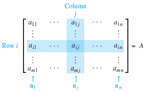
그림 1행렬 표기법.
Sums and Scalar Multiples
- 두 행렬이 같은 크기의 행과 열을 가지면 두 행렬은 같다고 표현한다.
- A와 B가 m×n 행렬이라고 한다면, A와 B의 합은 m×n 행렬이다.
정리 1 A,B,C는 같은 크기의 행렬이고 r과 s는 스칼라이다. a. A+B = B+A d. r(A+B) = rA + rB b. (A+B)+C = A+(B+C) e. (r+s)A = rA+sA) c. A+0 = A f. r(sA) = (rs)A |
Matrix Multiplication
정의 A는 m×n 행렬이고 B는 b1,...,bp 열을 가진 n×p 행렬이면, AB의 곱은 Ab1,...,Abp 열을 가진 m×p 행렬이다. 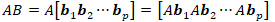 |
AB의 열은 B의 열을 가중치로 사용한 A열로 이루어진 선형 결합이다.
AB를 계산하기 위한 행과 열 규칙 AB의 곱이 성립하면, i행과 j열에 있는 성분은 A의 i행과 B의 j열에 대응하는 성분의 곱의 합이다. (AB)ij가 AB의 (i,j)-성분을 나타내고 A가 m×m 행렬이면, (AB)ij를 다음과 같이 쓸 수 있다. 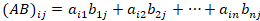 |
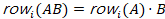
Properties of Matrix Multiplication
정리 2 A,B,C가 모두 m×n 행렬이면 이 행렬들의 합과 곱은 다음과 같이 정의된다. 1. A(BC) = (AB)C (곱의 결합법칙) 2. A(B+C) = AB + AC (좌분배법칙) 3. (B + C)A = BA + CA (우분배법칙) 4. r(AB) = (rA)B = A(rB) 스칼라 r에 대해 5. ImA = A = AIn (행렬 곱의 항등성) |
행렬곱을 계산할 때 계산순서는 바뀌어도 상관없지만 각 행렬의 위치는 바뀌면 안된다.
AB = BA이면 “A와 B는 서로 교환가능하다”라고 말한다.
주의: 1. 일반적으로 AB ≠ BA 이다. 2. 소거법칙(cancellation law)은 행렬곱에 적용되지 않는다. 즉, AB = AC이면, B = C는 일반적으로 사실이 아니다. 3. AB의 곱이 영행렬이면, 일반적으로 A = 0 또는 B = 0이라고 할 수 없다. |
Powers of a Matrix
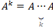
The Transpose of a Matrix
m×n 행렬 A의 전치(transpose)는 n×m 행렬이다. (기호: AT)
EXAMPLE 8 다음 행렬이 있다고 하자.
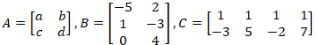
위 행렬의 전치행렬은 다음과 같다.
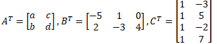
■
정리 3 A와 B를 다음 합과 곱에 대한 적절한 크기를 가진 행렬이라고 하자. 1. (AT)T = A 2. (A + B)T = AT + BT 3. 스칼라 r에 대해, (rA)T = rAT 4. (AB)T = BTAT |
2.2 THE INVERSE OF A MATRIX
n×n 행렬 A,C가 있고 "CA = I and AC = I"이라면, A는 역이 가능하다고 말한다(I = In). 여기서 C는 A의 역이다. C는 A에 의해 유일하게 존재한다. B가 또 다른 A의 역이라고 한다면, B = BI = B(AC) = (BA)C = IC = C 이기 때문이다.
A의 역행렬을 A-1로 표시하며, 다음 식이 성립한다.
A-1A = I and AA-1 = I
역이 가능하지 않은 행렬을 특이행렬(singular matrix)이라고 부르고 역이 가능한 행렬을 비특이행렬(nonsingular)이라고 부른다.
정리 4  이라고 하자. ad-bc ≠ 0 이면 A는 역이 가능하며 다음 식을 가진다. 이라고 하자. ad-bc ≠ 0 이면 A는 역이 가능하며 다음 식을 가진다.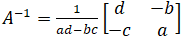 ad-bc = 0 이면 A는 역이 가능하지 않다. |
증명
ad-bc=0일 경우
(1)
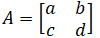
이고 ad-bc=0이라고 하자. a=b=0이라면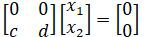
을 살펴봐야 한다. 이 식의 해는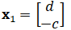
이다. a=b=c=d인 경우가 아니라면 해는 0이 아니다. 그러나 a=b=c=d라면 A는 영행렬이고 모든 벡터 x에 대해 Ax=0이다.(2) c=d=0이라면
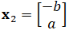
로 설정한다. 그러면 -cb+da=0이기 때문에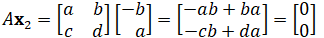
이다. 따라서 x2는 Ax=0의 자명하지 않은 해이다. 모든 경우에서 Ax = 0은 하나 이상의 해를 갖는다. 이것은 A가 역이 가능한 경우에는 불가능하다. 따라서 A는 역이 가능하지 않다.ad-bc≠0일 경우
(1)
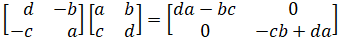
. CA=I를 얻기 위해서 양변을 ad-bc로 나눠라.(2)  . 양변을 ad-bc로 나눠라.
. 양변을 ad-bc로 나눠라.
(2) 식의 좌변을 풀면 다음과 같다.
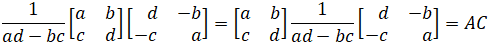
따라서 우변은 I이고, 좌변은 AC이다. (1) 또한 마찬가지이다.
■
ad-bc를 A의 결정자(determinant)라고 하며, 다음과 같이 작성한다.
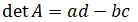
정리 5 A가 역이 가능한 n×n 행렬이면, Rn에 속한 각 b에 대해 식 Ax = b는 유일해 x = A-1b를 갖는다. |
증명 Rn에 속한 b가 있다고 하자. A-1b가 x에 대해 치환되면 Ax = A(A-1b) = (AA-1)b = Ib = b이기 때문에 해는 존재한다. 해가 유일하다는 것을 증명하기 위해 "u가 어떤 해라면 u는 A-1b이여야 한다"를 보여야 한다. Au = b라면 양변에 A-1을 곱할 수 있고 다음과 같은 결과를 얻는다.
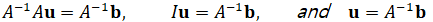
정리 6 a. A가 역이 가능한 행렬이면 A-1은 역이 가능하다. 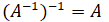 b. A와 B가 역이 가능한 n×n 행렬이면, AB도 역이 가능한 행렬이다. AB의 역은 역순서로 있는 A와 B의 역의 곱이다. 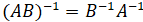 c. A가 역이 가능한 행렬이면 AT도 역이 가능한 행렬이다. AT의 역은 A-1의 전치이다. 즉, 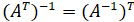 |
증명
(a) A-1C = I이고 CA-1 = I인 행렬 C를 찾아야 한다. 사실 이 식들은 C 대신에 A를 넣어도 만족한다. 따라서 A-1이 역이 가능하다면 A가 바로 그 역이다.
(b)
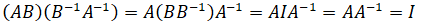
. (B-1A-1)(AB) = I도 동일한 결과를 보여준다.(c) 정리3(d)를 이용하여 다음을 계산한다. (A-1)TAT = (AA-1)T = IT = I. 마찬가지로 AT(A-1)T = IT이다. 따라서 AT가 역이 가능하다면 그 역은 (A-1)T이다.
■
Elementary Matrices
기본 행렬(elementary matrix)
단위 행렬에서 단일 기본 행 연산을 수행하여 나온 행렬
EXAMPLE 5 다음 행렬이 있다고 하자.
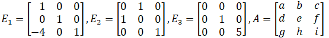
E1A, E2A, E3A를 계산하고 A의 기본 행 연산으로 이러한 곱이 어떻게 얻어질 수 있는지 설명해라.
SOLUTION
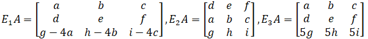
A의 (-4*1행)을 3행에 더하면 E1A가 나온다. 1행과 2행을 바꾸면 E2A가 나온다. 3행에 5를 곱하면 E3A가 나온다.
■
- 기본 행 연산이 m×n 행렬에서 실행된다면, 결과값으로 EA 행렬이 나올 수 있다. 여기서 E는 Im에서 동일한 행 연산을 통해 나온다.
- 기본행렬 E는 역이 가능하다. E의 역은 I로 역변환할 수 있는 E를 변환한 같은 종류의 기본행렬이다.
EXAMPLE 6
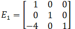
의 역을 찾아라.SOLUTION E1을 I로 바꾸기 위해 (4*1행)을 3행에 더한다. 결과로 나온 기본행렬은 다음과 같다.
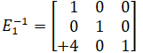
■
정리 7 n×n 행렬 A는 A가 I에 행 동치이면 역이 가능하다(↔). 이 경우, A를 I로 바꾸는 기본 행 연산의 순서들은 또한 I를 A-1로 변환한다. |
주의: 1장 - 정리 11의 증명에 있는 첨언은 “P는 Q의 필요충분조건이다”가 다음 두 문장과 같다는 것을 알려준다: (1) “P면 Q이다” 그리고 (2) “Q이면 P이다”. 두 번째 문장은 첫 번째 문장의 역(converse)이라고 하고, 이 증명의 두 번째 문단에서 ‘역으로 또는 반대로 (conversly)’라는 단어의 사용을 위해 이용된다.
증명 A가 역이 가능하다고 하자. 그러면 Ax = b는 각 b에 대한 해(정리 5)가 존재하기 때문에, A는 모든 행에 회전축 위치를 가진다(1.4절의 정리 4). A는 정사각 행렬이기 때문에, n개 회전축 위치는 대각선을 이룬다. 이는 A의 기약 사다리꼴 형태가 In이라는 것을 알려준다. 즉, A ~ In.
이제 역으로(conversely) A ~ In라고 하자. A의 행 축소의 각 단계는 기본행렬의 왼쪽곱과 일치하므로 기본행렬 E1,...,Ep가 존재하고 다음 결과를 가진다.
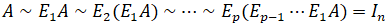
즉,
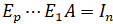
(1)역이 가능한 행렬들의 곱 Ep ... E1이 역이 가능하다면 (1)은 다음을 유도한다.
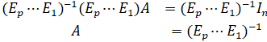
따라서 역행렬의 역이기 때문에(정리 6), A는 역이 가능하다. 또한 다음식을 가진다.
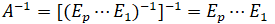
그러면
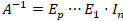
이고, A-1은 E1,...,Ep를 연속해서 In에 적용함으로써 얻어지는 결과이다. 이는 A를 In으로 약분했던 (1)과 같은 순서이다.■
An Algorithm for Finding A-1
A-1을 찾기위한 알고리즘 첨가행렬 [ A I ] 을 행 축소하라. A가 I에 대해 행 동치라면, [ A I ]는 [ I A-1 ]에 행 동치이다. 그렇지 않으면 A는 역을 가지지 않는다. |
EXAMPLE 7
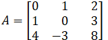
의 역이 존재한다면 그 역을 찾아라.SOLUTION
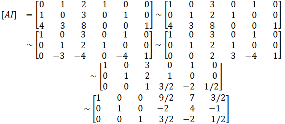
A~I이기 때문에 정리 7은 A가 역이 가능하다는 것을 보여준다.
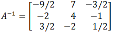
마지막 답을 확인해 보자.
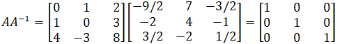
A가 역이 가능하기 때문에 A-1A = I를 확인할 필요는 없다.
■
Another View of Matrix Inversion
In의 열을 e1,...,en이라고 하자. [ A I ]에서 [ I A-1 ]인 행 축소는 n계의 동시 해로 보일 수 있다.
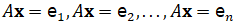
때때로 몇 개의 열만 필요할 수도 있기 때문에 이 방법은 유용하다.
2.3 CHARACTERIZATIONS OF INVERTIBLE MATRICES
정리 8 - 역행렬 정리 (The Invertible Matrix Theorem) A를 n×n 정사각 행렬이라고 하자. 그러면 다음 문장은 모두 동치이다. 즉, 모두 참이거나 거짓이다. a. A는 역이 가능한 행렬이다. b. A는 n×n 단위행렬에 행 동치이다. c. A는 n개의 회전축 위치를 갖는다. d. 방정식 Ax = 0은 자명한 해만을 갖는다. e. A열은 선형독립 집합을 만든다. f. 선형 변환 x ↦ Ax는 일대일 대응이다. g. 방정식 Ax = b는 Rn에 속한 각 b에 대해 적어도 하나의 해를 갖는다. h. A열은 Rn을 생성한다. i. 선형 변환 x ↦ Ax는 Rn을 Rn에 대응시킨다. j. CA = I인 n×n 행렬 C가 존재한다. k. AD = I인 n×n 행렬 D가 존재한다. l. AT는 역이 가능한 행렬이다. |
표기법: (a)문장이 참이라면 (j)문장 또한 참이다. 이것을 (a) ⇒ (j)로 표기한다. 이로 인한 증명은 Figure 1에 있는 원을 만든다. 다섯 개의 문장 중 하나라도 참이면 나머지도 모두 참이다. 남아있는 증명은 이 원에 연결된다.
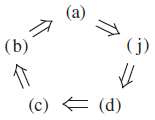
그림 1
증명 (a)문장이 참이면 A-1은 (j)에 있는 C이다. 따라서 (a) ⇒ (j)이다. 다음으로, 2.1절의 연습문제 23번에 의해서 (j) ⇒ (d)이다. 또한, 2.2절의 연습문제 23번에 의해서 (d) ⇒ (c)이다. A가 정사각 행렬이고 n개 회전축 위치를 갖는다면 회전축은 주대각선을 이룬다. 여기서 A의 기약사다리꼴 형태는 In이다. 따라서 (c) ⇒ (b)이다. 또한, 2.2절의 정리7에 의해 (b) ⇒ (a)이다. 이것은 그림 1에 있는 원을 만든다.
다음으로, D는 A-1이기 때문에 (a) ⇒ (k) 이다. 또한, 2.1절의 연습문제 24번에 의해 (k) ⇒ (g)이고, 2.2절의 연습문제 24번에 의해 (g) ⇒ (a)이다. 따라서 (k)와 (g)는 원에 연결된다. 더불어, 1.4절의 정리4와 1.9절의 정리12(a)에 의해서, (g), (h), (i)는 어떤 행렬에 대해 동치이다. 그러므로 (h)와 (i)는 (g)를 통해 원과 연결되어 있다.
(d)가 원에 연결되어 있으므로, (e)와 (f) 또한 원에 연결된다. (d), (e), (f)가 모두 어떤 행렬 A에 동치이기 때문이다. (1.7절과 1.9절의 정리 12(b)를 보자). 마지막으로 2.2절의 정리6(c)에 의해 (a) ⇒ (l)이고, 서로 교환된 A와 AT를 가진 같은 정리에 의해(l) ⇒ (a)이다. 이로써 증명은 완성된다.
————————————
** (g)는 “방정식 Ax = b는 Rn에 속한 각 b에 대해 유일해를 가진다”라고 쓸 수도 있다.
- A와 B를 정사각 행렬이라고 하자. AB = I이면, A와 B는 모두 역이 가능하다. 즉, B = A-1이고 A = B-1이다.
Invertible Linear Transformations
선형변환 T : Rn → Rn은 다음과 같은 함수 S : Rn → Rn이 존재한다면 역이 가능하다고 말한다.
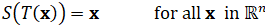
(1)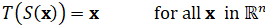
(2)T의 역을 S라고 하며 T-1처럼 사용한다.
정리 9 T : Rn → Rn은 선형변환이고 A를 T에 대한 표준행렬이라고 하자. A가 역이 가능한 행렬이면 T는 역이 가능하다(↔). 이 경우, S(x) = A-1x에 의해 나온 선형변환 S는 방정식 (1)과 (2)를 만족하는 유일한 함수이다. |
증명 T가 역이 가능하다고 하자. 그러면 (2)는 T가 Rn에 일대일 대응임을 보여주며, b가 Rn에 속하고 x = S(b)라면 T(x) = T(S(b)) = b이기 때문에, 각 b는 T의 범위 안에 있다. 그러므로 역행렬 정리 (i)에 의해 A는 역이 가능하다.
반대로 A가 역이 가능하다고 가정하고, S(x) = A-1x라고 하자. 그러면 S는 선형변환이고 분명히 (1)과 (2)를 만족한다. 예를 들면 다음과 같다.
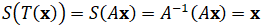
따라서 T는 역이 가능하다.
■
2.4 PARTITIONED MATRICES
분할 행렬 (partitioned matrix) / 블록 행렬 (block matrix)
행렬 내부를 특정 영역으로 분할한 행렬
EXAMPLE 1 행렬 A는 다음과 같다고 하자.
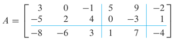
A는 2×3 분할행렬(or 블록행렬)로 나타낼 수 있다.
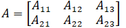
이 행렬의 요소는 블록이다. (또는 부분행렬)
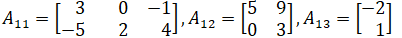
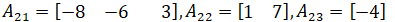
■
Addition and Scalar Multiplication
행렬 A,B가 크기가 같고 같은 방식으로 분할된다면, 행렬 합 A+B는 같은 분할을 만든다. 스칼라의 경우도 마찬가지이다.
Multiplication of Partitioned Matrices
정리 10 - AB의 행렬 확장 A가 m×n이고 B가 n×p이면, 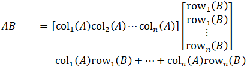 (1) |
증명 i행과 j열에 대해서, colk(A)rowk(B)에 있는 (i,j)요소는 colk(A)의 aik와 rowk(B)의 bkj의 곱이다. 그러므로 식 (1)에 있는 합에 있는 (i,j)요소는
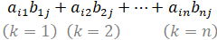
이 합은 또한 행렬 규칙에 의해 AB에 있는 (i,j)요소이다.
■
Inverses of Partitioned Matrices
EXAMPLE 5 행렬
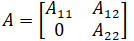
는 블록 상삼각(block upper triangular)을 나타낸다. A11을 p×p, A22를 q×q 그리고 A는 역이 가능하다고 가정하자. A-1의 공식을 찾아라.SOLUTION A-1을 B라고 하자. B를 분할하면,
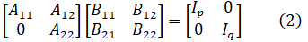
이 행렬식은 알려지지 않은 블록 B11,...,B22으로 유도하는 네 개의 식을 준다. 식을 계산하면,
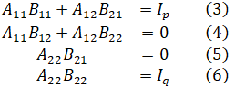
식 (6)은 그 자체로 A22가 역이 가능하다는 것을 보여주진 않는다. 그러나 A22는 정사각행렬이기 때문에, 역행렬 정리와 (6)은 모두 A22가 역이 가능하고 B22 = A22-1임을 보여준다. 다음으로 (5)의 양쪽을 A22-1로 왼쪽곱하면 다음을 얻는다.
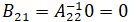
따라서 (3)은 다음 식으로 단순화할 수 있다.
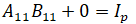
A11은 정사각행렬이기 때문에, 이는 A11이 역이 가능하고 B11 = A11-1임을 보여준다. 마지막으로 이 결과를 사용하여 (4)를 풀어보자.
따라서,
■
2.5 MATRIX FACTORIZATIONS
행렬 분해(matrix factorization)
단일 행렬을 두 개 이상의 행렬곱으로 표시하는 것
- 행렬 분해는 기존 행렬의 계산을 최소화하기 위해 사용된다.
The LU Factorization
가정
A는 행 교환 없이 사다리꼴 형태로 행 축소가 가능한 m×n 행렬이다. 그러면 A는 A = LU 형태로 쓰일 수 있다. L은 대각선이 모두 1을 가진 하삼각 m×m 행렬이고, U는 A의 m×n 사다리꼴 형태이다. 그림 1은 A의 LU 분해를 나타낸다. L은 역이 가능하고 단위 하삼각 행렬이라고 불린다.
그림 1 LU 인수분해.
A = LU일 때, Ax = b는 L(Ux) = b 형태로 쓰일 수 있다. Ux 대신에 y를 쓰면, 다음 식의 쌍으로 x를 찾을 수 있다.
EXAMPLE 1 다음식은 증명 가능하다.
이 LU 분해를 사용해 Ax = b를 풀어라.
SOLUTION
x를 찾을 때, LU분해의 산술연산 횟수는 28번이다. 그러나 [A b]에서 [I x]에 이르는 행 축소 연산 횟수는 62번이다.
■
An LU Factorization Algorithm
한 행의 배수를 그 밑의 다른 행에 더하는 행 치환만 사용하여, A가 사다리꼴 형태 U로 축소될 수 있다고 가정하자. 이 경우에 단위 하삼각 기본행렬 E1,...,Ep이 존재하며 식은 다음과 같다.
LU 분해 알고리즘 1. 가능하다면, 일련의 행 교환 연산으로 A를 사다리꼴 형태 U로 축소하라. 2. 같은 일련의 행 연산이 L을 I로 축소시키는 L의 요소를 찾아라. |
EXAMPLE 1 행렬 A의 LU 분해를 찾아라.
SOLUTION A는 4개 행을 가졌기 때문에, L은 4×4이여야 한다. L의 첫번째 열은 A의 첫번째 열을 상단 회전축 성분으로 나눈 것이다.
A와 L의 첫번째 열을 비교하자. A의 첫번째 열을 0으로 만드는 행 연산은 마찬가지로 L의 첫번째 열을 0으로 만든다. 나머지 열들에 대해서도 이러한 행 연산이 적용되는지를 보기 위해, A에서 사다리꼴 형태 U로 바뀌는 행 축소를 보자. 각 행렬의 색이 칠해진 성분들은 A를 U로 변환하는 행 연산의 순서를 결정하기 위해 사용된다.
간단한 계산만으로 L과 U가 LU = A를 만족한다는 것이 증명된다.
■
A Matrix Factorization in electrical Engineering
v1: 입력전압, i1: 입력 전류, v2: 출력전압, i2: 출력 전압
A는 전달 행렬(transfer matrix)이라 불린다.
그림 3 입출력 단자를 가진 회로.
직렬 회로(series circuit)
직렬로 연결된 회로
분로(shunt circuit)
한 회로에서 흐르는 전류를 다른 회로로 분산할 수 있는 회로
그림 4 사다리 망.
그림 4는 사다리 망(ladder network)를 나타낸다. 두 개의 회로(그 이상도 가능하다)가 직렬로 연결되어 있으므로 한 회로의 출력은 다음 회로의 출력이 된다.
옴의 법칙(Ohm’s law)
V = IR
키르히호프의 법칙(Kirchhoff’s law)
회로의 분기점으로 들어온 전류 또는 전압의 합은 분기점에서 나가는 전류 또는 전압의 합과 같다.
옴의 법칙과 키르히호프의 법칙(Kirchhoff’s law)을 사용하여, 직렬회로와 분로의 전달행렬을 다음과 같이 표현할 수 있다.
EXAMPLE 3
a. Figure 4에 있는 사다리 망의 전달 행렬을 계산하라.
b. 전달 행렬이 인 사다리 망을 설계하라.
SOLUTION
a. A1과 A2를 각각 직렬회로와 분로의 전달행렬이라고 하자. 그러면 입력벡터 x는 A1x로 변환되고 그 다음에는 A2(A1x)로 변환된다. 회로의 직렬연결은 선형변환의 합성(composition)과 일치한다. 사다리 망의 전달행렬은 다음과 같다.
b. 식 (6)처럼 행렬 을 전달 행렬의 곱으로 인수분해 하기 위해서, 다음을 만족하는 그림 4의 R1과 R2를 찾아야 한다.
(1,2)-성분에서 R1 = 8옴이 나오고, (2,1)-성분으로 1/R2 = .5옴이 나온다. 이 값으로 Figure 4에 있는 망은 전달행렬을 갖는다.
■
위와 같이 전자 부품을 최소화하여 회로를 만드는 것이 전달행렬이 이용되는 일반적인 경우이다.
6 THE LEONTIEF INPUT-OUTPUT MODEL
국가 경제가 제품 또는 용역(service)을 만드는 n개 부문으로 나눠진다고 가정하고, x를 한 해의 각 부문의 산출을 목록화한 Rn에 속한 생산 벡터(production vector)라고 하자. 또한 경제의 다른 부분(개방 부문이라 불린다)은 제품이나 용역을 생산하지 않고 소비만 한다고 가정하고, d를 경제의 비생산 부분으로서 다양한 부문에서 요구되는 제품이나 용역의 값을 목록화한 최종 수요 벡터(final demand vector)(또는 bill of final demands)라고 하자. 벡터 d는 소비자 수요, 정부 소비, 잉여 생산, 수출, 또는 다른 외부 수요를 표현할 수 있다.
소비자 수요를 충족시키기 위해 다양한 부문에서 제품이 생산되므로, 생산자는 생산 원료로 필요한 또 다른 제품에 대해 추가적인 중간 수요(intermediate demand)를 만든다. 각 부문의 상호 관계는 매우 복잡하고, 최종 수요와 생산 사이의 관련성은 불명확하다. Leontief는 “생산 수준 x가 있다면 그 결과 생산량(또는 공급량)은 생산에 대한 총 수요와 균형을 이룰 것이다”라고 했다. 식은 다음과 같다.
Leontief의 투입산출모형(input-output model)의 기본 가정은 다음과 같다: 각 부문의 산출 단위당 요구되는 투입을 목록화한 Rn에 속한 단위 소비 벡터(unit consumption vector)가 존재한다. 모든 투입과 산출은 백만달러 단위로 측정된다. (제품과 노동의 가격은 상수로 유지된다.)
단순한 예제로써 경제가 제조업, 농업, 용역 3개의 부문으로 이루어진다고 가정하자. 다음 표에서 단위 소비 벡터 c1,c2, c3로 각각 3개 부문이 나타난다.
EXAMPLE 1 제조업 부문이 100 단위를 산출한다고 결정한다면 소비되는 양은 얼마인가?
SOLUTION 다음을 계산하자.
100 단위를 산출하기 위해서, 제조업은 다른 분야의 제조업 50 단위, 농업 20단위, 용역 20단위를 주문하고 소비해야한다.
■
제조업이 산출 단위 x1을 생산하기로 결정한다면, x1c1은 제조업의 중간 수요를 나타낸다. 산출 단위 x1을 만드는 과정에서 x1c1이 소비되기 때문이다. 마찬가지로 x2와 x3이 농업과 용역 부문의 계획된 산출을 나타낸다면, x2c2와 x3c3는 해당 산출과 일치하는 중간 수요를 목록화한다. 총 중간 수요는 다음과 같다.
여기서 C는 소비 행렬(consumption matrix) [c1 c2 c3] 이다.
식 (1)과 (2)는 Leontief 모형을 만든다.
LEONTIEF의 투입산출모형, 또는 생산 방정식 |
식 (4)는 형태로 쓰거나 다음과 같이 쓸 수 있다.
EXAMPLE 2 소비 행렬이 (3)과 같은 경제를 생각해보자. 최종 수요가 제조업 50 단위, 농업 30단위, 용역 20단위라고 가정하자. 이 수요를 만족하는 생산 수준 x를 찾아라.
SOLUTION (5)에 있는 계수 행렬은 다음과 같다.
(5)를 풀기 위해서 첨가 행렬을 행 축소 하자.
마지막 열은 반올림 되었다. 제조업은 대략 226 단위를, 농업은 119 단위, 용역은 78단위를 생산해야 한다.
■
열 합(column sum)
행렬에 있는 하나의 열이 가진 모든 요소의 합
정리 11 한 경제의 소비 행렬을 C라고 하고, 최종 수요를 d라고 하자. C와 d가 음수가 아닌 성분을 가지고 C의 각 열의 합이 1보다 작으면, (I-C)-1은 존재하고, 생산 벡터 는 음수가 아닌 성분을 가지며 다음 유일 해를 갖는다. |
A Formula for (I-C)-1
수요 d가 다양한 산업에서 나타난다고 하자. 그리고 생산수준을 x = d로 설정함으로써 산업들이 이에 반응한다고 하자. 산업들이 d를 생산할 준비를 하기 위해, 원료와 다른 투입품을 주문한다. 이는 투입품에 대한 중간수요 Cd를 만든다. 추가된 수요 Cd를 충족 시키기 위해, 산업들은 추가 투입품으로 C(Cd) = C2d를 필요로 한다. 이런 식으로 추가 수요의 중간 수요를 계속 찾아 계산한다. 이러한 과정은 이론적으로 무한할 수 있으나, 현실에서는 일어나기가 힘들다.
충족되어야 하는 수요 | 수요를 충족시키기 위해 필요한 투입품 | |
최중 수요 | d | Cd |
중간 수요 | ||
1회 | Cd | C(Cd) = C2d |
2회 | C2d | C(C2d) = C3d |
3회 | C3d | C(C3d) = C4d |
표의 나타나는 모든 수요를 만족시키기 위한 생산 수준 x는 다음과 같다.
식 (6)을 이해하기 위해서, 다음 대수 단위를 고려해보자.
C의 각 열의 합이 전부 1보다 작다면, I-C는 역이 가능하다. Cm은 m이 점점 커져갈수록 영행렬에 근접하며, 따라서 I-Cm+1 → I 가 된다.
2.7 APPLICATION TO COMPUTER GRAPHICS
컴퓨터 그래픽(computer graphic)
컴퓨터 화면 위에서 보여지거나 움직이는 상
- 상은 선 또는 곡선을 연결한 많은 점들로 이루어져 있다. 곡선은 종종 짧은 직선들로 측정된다. 도형은 점들의 목록을 사용해 수학적으로 정의된다.
EXAMPLE 1 그림 1에 대문자 N은 여덟 개의 점 또는 꼭지점으로 결정된다. 점의 좌표는 자료 행렬(data matrix) D에 저장될 수 있다.
그림1 정(正)자 N.
D외에도 어느 꼭지점이 선에 연결되어 있는지 표시해야 하지만 편의를 위해 생략한다.
■
EXAMPLE 2 가 주어졌을 때, Example 1의 문자 N에 대한 가로엇갈림 변환 x ↦ Ax의 효과를 설명하라.
SOLUTION 행렬 곱의 정의를 이용해 곱 AD의 열은 문자 N에 있는 꼭지점들의 상을 가진다.
그림 2는 변환된 꼭지점을 따라 선 조각(line segment)을 연결한 N이다.
그림2 기울어진 N.
■
EXAMPLE 3 Example 2처럼, 가로엇갈림 변환을 실행하는 변환들로 이루어진 행렬을 계산하고 x-좌표를 .75의 인수를 이용해 증가시켜라.
SOLUTION x-좌표를 .75로 곱한 행렬은 다음과 같다.
따라서, 합성 변환 행렬은 다음과 같다.
합성 변환의 결과는 그림 3에 나타난다.
그림 3 합성 변환된 N.
■
Homogeneous Coordinates
동차 좌표(homogenous coordinates)
동일한 한 좌표를 가진 좌표. (예: 점 (x,y)는 동차 좌표 (x,y,1)를 가진다.)
- 점으로 표현된 동차 좌표는 스칼라를 더하거나 곱할 수 없다. 오직 3×3 행렬 곱으로 변환될 수 있다.
EXAMPLE 4 (x,y) ↦ (x+h,y+k) 로의 이동(translation)은 동차 좌표 (x,y,1) ↦ (x+h,y+k,1)로 쓰여질 수 있다. 이 변환은 행렬 곱으로 계산될 수 있다:
■
EXAMPLE 5 R2에서의 선형 변환은 형태인 부분 행렬에 의해 동차 좌표로 표현된다. A는 2×2 행렬이다. 일반적인 예는 다음과 같다. 첫번째 행렬은 원점을 기준으로